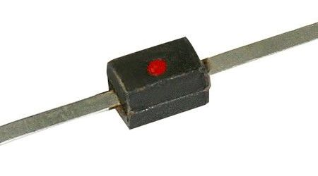
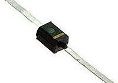
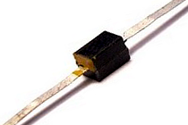
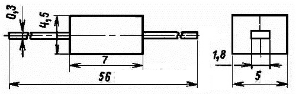
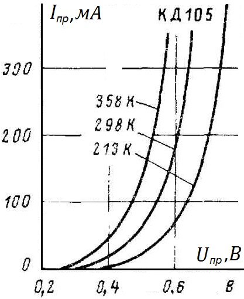

Диод КД105
(КД105Б, КД105В, КД105Г)
Диод КД105 (КД105Б, КД105В, КД105Г) - диффузионный, кремниевый.
Имеет гибкие выводы и пласстсассовый корпус. Масса диода не более 0,5 г.
Полярность диодов обозначается полосой желтого цвета у анода.
Маркировка выполнена цветной точкой на корпусе:
- КД105В - зелёная
- КД105Г - красная
- КД105Б - точка отсутствует
 |
 |
 |
| КД105Г | КД105В | КД105Б |
Рис. 1 - Внешний вид диодов КД105

Рис. 2 - Размеры диода КД105
Таблица 1
| Прямое напряжение (среднее) при Iпр ср = 300 мА, не более | 1 В |
| Обратный ток (средний) при Uобр = Uобр и макс, не более: | |
| при +25°C | 100 мкА |
| при +85°C | 300 мкА |
| Обратное напряжение диодов КД105 (амплитудное значение) при температуре -60...+55°C: | |
| КД105Б | 400 В |
| КД105В | 600 В |
| КД105Г | 800 В |
| Импульсный прямой ток (однократная перегрузка) при tи ≤ 20 мкс | 15 А |
| Прямой ток (средний) | 300 мА |
| Частота без снижения режимов | 1000 Гц |
| Рабочая температура (окружающей среды) | -60...+85°C |

Рис. 3 - Зависимость прямого тока от напряжения диода КД105